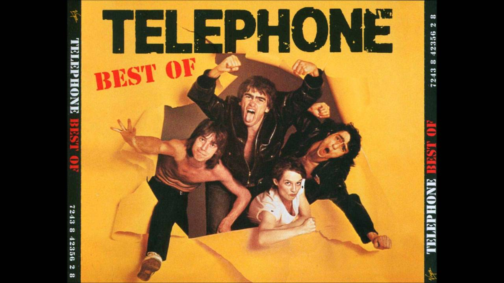

Indochine est un groupe de pop rock français originaire de Paris, formé par Nicola Sirkis et Dominique Nicolas en 1981.

C’est la quintessence d’Indochine dans les années 1980 : l’attrait asiatique car fortement inspiré par “L’Amant” de Marguerite Duras; le sexe, déjà très évoqué au fur et à mesure des singles sortis auparavant; un son pop/new wave efficace et entraînant. Tirant la bourre à “L’Aventurier” lors des concerts, la chanson est probablement aussi intéressante et aussi bien construite, car sortie un peu plus tard. Le groupe avait pu travailler le son pour en faire un petit bijou d’électronique et de rythmique imparable. Nous faisant voyager dans la pénombre chaude et moite de cette chambre, au sein de laquelle il se passe des choses d’une douceur et d’un érotisme sans nom, le titre nous enlève avec son pont incroyable et avec ses bruits métalliques rythmant les fins de couplets, comme le décompte d’une horloge indiquant la fin de la nuit des amants de la chanson. Pour recommencer, encore et encore, jusqu’à atteindre trois nuits par semaine.
Bijou pop emblématique des années 1980, un tube sautillant et optimiste, Indochine marque durablement le paysage avec son deuxième single. L’histoire de Bob Morane et de ses acolytes se baladant dans le monde entier et livrant une guerre sans merci contre le crime et le mal en fait un morceau ludique et accrocheur. On retrouve ici la marque de fabrique des débuts du groupe : une pop légère mais léchée, des histoires de voyage toutes plus fantastiques les unes que les autres (“Kao-Bang”, “Salômbo”, toutes capables de nous faire voyager dans des contrées exotiques). Le tout enrobé d’une diversité de notes plus ou moins asiatiques, se rattachant aux premières influences de Nicola Sirkis : Duras et son image fantasmée de l’Indochine. Impossible de passer à côté de ce titre aux mariages, baptêmes et autres évènements de la vie, même en 2020.
Le harcèlement scolaire est un thème cher au cœur d’Indochine. “College Boy”, avec son clip réalisé par Xavier Dolan a fait exploser aux yeux du grand public cette souffrance qu’endurent certains enfants. Loin de choquer gratuitement, ce que le groupe ne fait jamais sans une idée derrière la tête, il reflète parfaitement “Black City Parade” sorti en 2013. Un album crépusculaire, à l’image de sa pochette, froid, électronique mais néanmoins d’une très grande richesse musicale. Ici, cette petite ritournelle entêtante new wave, sur fond de texte portant sur la sexualité et la violence, marque durablement l’esprit de l’auditeur. Avec un crescendo glacial à coups de synthétiseur, c’est indiscutablement l’un des meilleurs titres du groupe pour les années 2010.
Après plusieurs années dans le creux de la vague malgré des albums très intéressants (“Dancetaria”, “Le Baiser”), Indochine revient sur le devant de la scène via “Paradize” (2002). Surfant sur la vague emo goth des années 2000 et riche d’une esthétique et d’un son particulièrement alléchant, le groupe signe ici son renouveau. Nicola Sirkis explore tout au long de ce nouveau disque des thèmes qui vont parler à une population adolescente qui se retrouvera dans les textes : le mal être, le sexe, la religion. “J’ai Demandé A La Lune” est désormais un incontournable des setlists des concerts d’Indo. Composée par Mickael Furnon de Mickey 3D, sa ritournelle électronique et ses paroles simplistes en font un tube immédiat pour les radios et les médias français. Une petite perle musicale entêtante.
Sorti après le décès de Stéphane Sirkis, “Dancetaria” (1999) est une sorte d’album testamentaire (Stéphane Sirkis a en effet enregistré quatre maquettes pour lesquelles il sera crédité de manière posthume). Il signe l’arrivée au sein du groupe d’Oli De Sat, pilier d’Indochine à partir des années 2000. A grand renfort d’électronique et de synthétiseur, le son de “Dancetaria” s’inscrit durablement dans la carrière et la discographie d’Indochine. Quelques titres en font d’ailleurs un disque sur lequel il faut se pencher, ne serait-ce que par curiosité : “Dancetaria” avec sa longueur de 7min25 quasiment instrumentales ou “Juste Toi Et Moi” et son histoire tragico-romantique. “Stef II” et sa ligne de basse entêtante en fait un morceau quelque peu en décalage du reste de l’album. Cette espèce de bruit de ressort brut surprend dès le début du titre. Mais c’est finalement une vraie réussite, et le son rock terriblement exaltant du morceau l’emporte. Le meilleur est au milieu du titre, sur ce pont rallongé presque jusqu’à l’usure, avec un crescendo infernal qui explose aux oreilles de l’auditeur.
Téléphone est un groupe de rock français. Il est formé le 12 novembre 1976 et séparé le 21 avril 1986. Composé de Jean-Louis Aubert, Louis Bertignac, Corine Marienneau et Richard Kolinka, il connaît un énorme succès dès ses débuts avec plusieurs tubes et des tournées très populaires.
Titre éponyme et chanson phare du 5ème album du groupe, « Un autre monde » reste aujourd’hui LA chanson la plus connue du groupe et celle qui est passé le plus souvent en radio. L’album sera l’un de leur plus grand succès avec plus de 600 000 exemplaires vendus.
L’une des toutes premières chansons écrites par Jean-Louis Aubert, « Métro, c’est trop » se trouve à une très belle 2ème place dans notre classement des meilleures chansons de Téléphone. Groupe d’origine parisienne, un titre sur le métro semblait une évidence. Le son est vif, très rock. « Métro, c’est trop » a un gimmick devenu culte.
Autre énorme tube issu de l’album Dure Limite avec « Ça, c’est vraiment toi », voici maintenant « Cendrillon ». Écrite, composé et interprété au chant par Louis Bertignac, « Cendrillon » fait partie des chansons les plus connues du groupe. Le texte évoque la vie d’une jeune femme qui voit ses rêves se confronter à la dure réalité de la vie. Bienvenue sur le podium des meilleures chansons de Téléphone.
On continue notre classement des meilleures chansons de Téléphone avec le titre « Argent Trop Cher ». La chanson s’attaque aux effets néfastes de l’argent et ironie du sort, s’est bien l’argent qui a risqué de faire implosé le groupe. Aubert aura touché des royalties sur les chansons qu’il a intégralement écrite et le groupe n’acceptera que moyennement le fait qu’il ne veuille pas les partager. Finalement Aubert cédera.
Le 1er véritable gros single qui fera explosé Téléphone aux yeux et aux oreilles du public français. Initialement écrite par Jean-Louis Aubert sous la forme d’une nouvelle de science-fiction, le titre est devenu rapidement l’hymne d’une génération et reste encore aujourd’hui l’une des meilleures chansons de Téléphone.